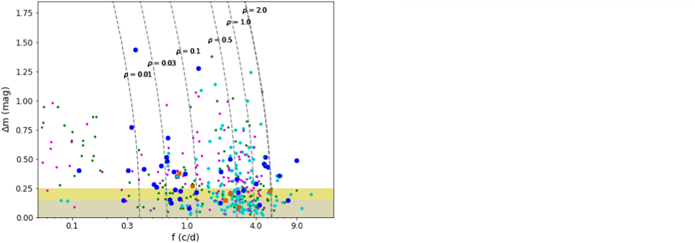
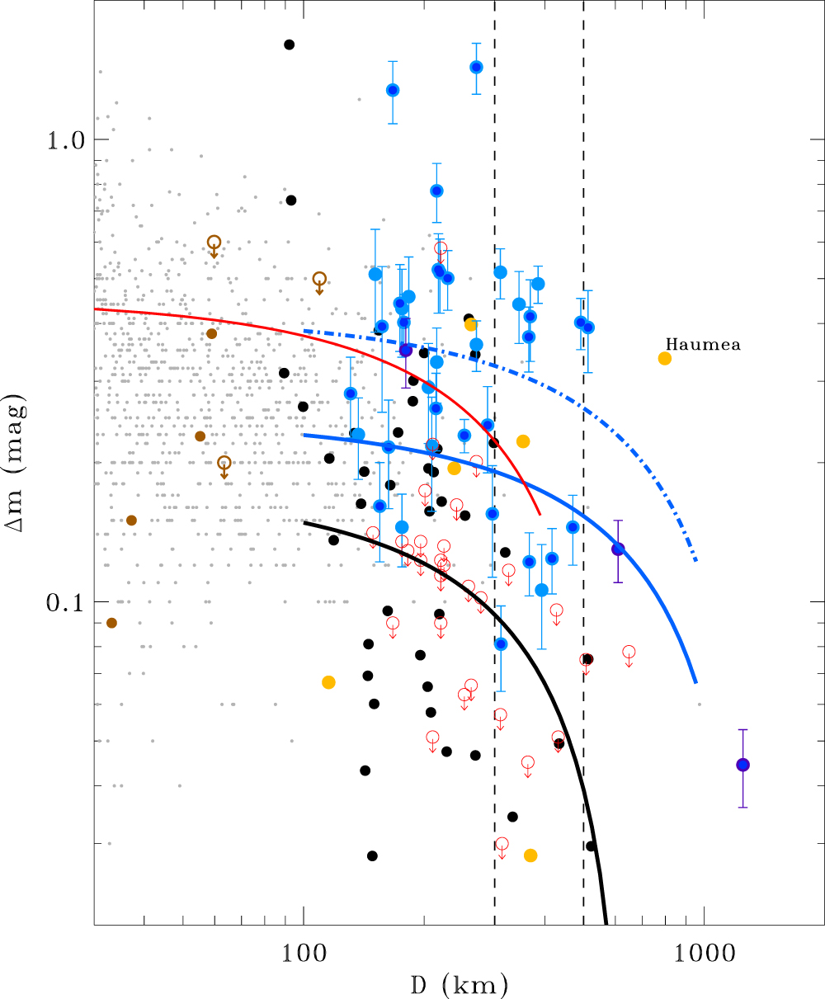

Background
It has been shown in the last couple of years that protoplanetary or planet-forming disks have various substructures like rings, spiral arms, asymmetric features or gaps. It is believed that forming planets within the disk can create such gaps.
Results
A simple way to infer the shape of an asteroid is to plot its light curve amplitude against its rotational frequency (cycle/day). The figure below shows such a plot, with our TNOs presented in blue. The dashed curves indicate the rotation of a strengthless body with the shape of a Jacobi ellipsoid for a given density (in g cm-3). Objects lying to the right of a curve are likely single rotating bodies with that density, whereas objects to the left of those curves are too slow to maintain elongated bodies, therefore they are often explained by binarity.
TNOs believed to have a density of 0.5 - 1.0 g cm-3, and most of our targets lie left to those specific density curves.
The fraction of binary candidates is similar in every K2 group (blue—our K2 TNOs; purple—K2 Trojans; Green—K2 Hildas; Brown—K2 Centaurs)

In addition, we found that there are TNOs with sizes D > 300km that produced larger light curve amplitudes than expected based on the assumptions that these further objects reach hydrostatic equilibrium at smaller sizes because of their lower compressive strength compared to the inner solar system bodies.
The figure below shows the light curve amplitudes and the estimated sizes of our TNOs with blue symbols. The region between the vertical dashed lines mark the irregular-to-spherical transition size range in the main belt. The blue and black lines are mean light curve medians for TNOs and main belt asteroids, respectively. Both lines follow a similar trend, however, TNOs have significantly larger amplitudes. Possible explanations:

For further details, please read my paper:
Kecskeméthy V. et al. “Light Curves of Trans-Neptunian Objects from the K2 Mission of the Kepler Space Telescope”. In: The Astrophysical Journal Supplement Series 264.1, 18 (Jan. 2023), p. 18.
DOI: 10.3847/1538-4365/ac9c67